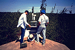

P.I.(s): Brian L. Markham, Brent N. Holben -- NASA/Goddard Space Flight Center
Co-I(s): Yoram J. Kaufman -- NASA/GSFC; Rangasayi Halthore, Tom Eck -- Hughes STX Corp.; Eric Vermote -- Univ. of Maryland
Objectives: To characterize the physical and optical properties of the atmospheric aerosol and the atmospheric column abundance's of water vapor and ozone over the BOREAS study area. A network of three to four fully three to four fully automatic sunphotometers/radiometers was established on a transect connecting the northern and southern BOREAS sites. These sites provided hourly direct solar and diffuse sky radiance measurements in the solar almucantar in the visible to near-infrared. During the intensive field campaigns the measurements were supplemented by additional movable stations and sampling of the aerosol particles. Aerosol physical properties of size distribution/concentration and composition, and aerosol optical properties of optical depth, phase function and albedo of single scattering were also determined. The annual cycle of the concentration and properties of the atmospheric aerosol particles in the Boreal region and the relation between the aerosol properties and the meteorological conditions, in particular the air trajectory and origin, is being assessed. The measured atmospheric properties are being used to validate retrieval algorithms of atmospheric parameters (e.g., water vapor, aerosol optical depths) from remotely sensed data. For selected remotely sensed data, atmospheric corrections are being performed using a radiative transfer code that accounts for the non-Lambertian forest canopy reflectance. The retrieved reflectances are being compared to those measured at the surface and to those obtained using the atmospheric correction methodology used operationally by the BOREAS project.
 The sun photometer at SSA-YJP (with RSS-11)
Get some RSS-11 data using FTP (BOREAS Investigators only, password required). [FTP Help]
Objective:
Characterization of the aerosol optical properties over BOREAS.
Data Collected:
Direct sun and sky radiance measurements in the almucanter and principal plane.
Data Products:
Aerosol optical thickness, precipitable water column abundances, aerosol size distribution and scattering phase function.
Equipment:
Cimel 318 automatic tracking sun photometers (5), 4 channel hand held (Miami) sun photometers (2).
| Cimel Instrument | Site | Data Acquisition Period | Significant Data Gaps/Reason | Degraded Data Periods/Reason |
|---|---|---|---|---|
| 6 | Prince Albert Airport | 5/26/94 - 6/5/94 7/20/94 - 7/26/94 9/12/94 - 9/18/94 |
Reduced data collection -- azimuth drive intermittent failure (5/26/94 - 6/5/94 ) | 440 nm poor calibration (IFC-1), no 380 nm channel (all dates) |
| 6 | Thompson Airport | 6/7/94 - 6/13/94 7/27/94 - 9/11/94 |
Reduced data collection -- azimuth drive failure (6/7/94 - 6/13/94) | 440 nm poor calibration (IFC-1), no 380 nm channel (all dates) |
| 11 | NSA-YJP | 5/16/94 - 10/25/94 | 5/24 - 5/30 Communication failure | - |
| 6/5 - 6/7 Transmitter failure | - | |||
| 8/5 - 8/8 Sunphoto battery failure | - | |||
| 8/9 - 8/13 Sunphoto battery failure | - | |||
| - | 6/26 - 7/4 partial aperture obstruction -- recalibrated with on-site Langley | |||
| 12 | Flin Flon | 5/19/94 - 10/24/94 | 9/21 - 9/25 Transmitter failure | - |
| 10/9 - 10/12 Transmitter failure | - | |||
| ~7/9 - 8/15 aureole gain setting erratic | - |
| Miami Instrument | Site | Data Acquisition Period | Significant Data Gaps/Reason | Degraded Data Periods/Reason |
|---|---|---|---|---|
| 317/319 | Thompson | 12/1/93 - 12/31/94 | - | ~7/15/94-present -increased signal variability particularly channels 3 and 4 due to filter positioning error |
| 322 | Waskesiu | 6/15/93 - 12/31/94 | limited data acquisition late fall 1993 to early spring 1994 | - |
RSS Overview || RSS-1 | RSS-2 | RSS-3 | RSS-4 | RSS-5 | RSS-6 | RSS-7 | RSS-8 | RSS-9 | RSS-10
RSS-11 | RSS-12 | RSS-13 | RSS-14 | RSS-15 | RSS-16 | RSS-17 | RSS-18 | RSS-19 | RSS-20
 Send a data request to the BOREAS Data Manager (BOREAS Investigators only)
Send a data request to the BOREAS Data Manager (BOREAS Investigators only)
E-Mail a comment on this page to the curator 
Send e-mail to Jaime Nickeson, the BORIS representative for the RSS group
Return to the RSS Overview
Return to the BOREAS Science Groups Overview
Return to the BOREAS Home Page
Last Updated: October 24, 1997
{kind=link}